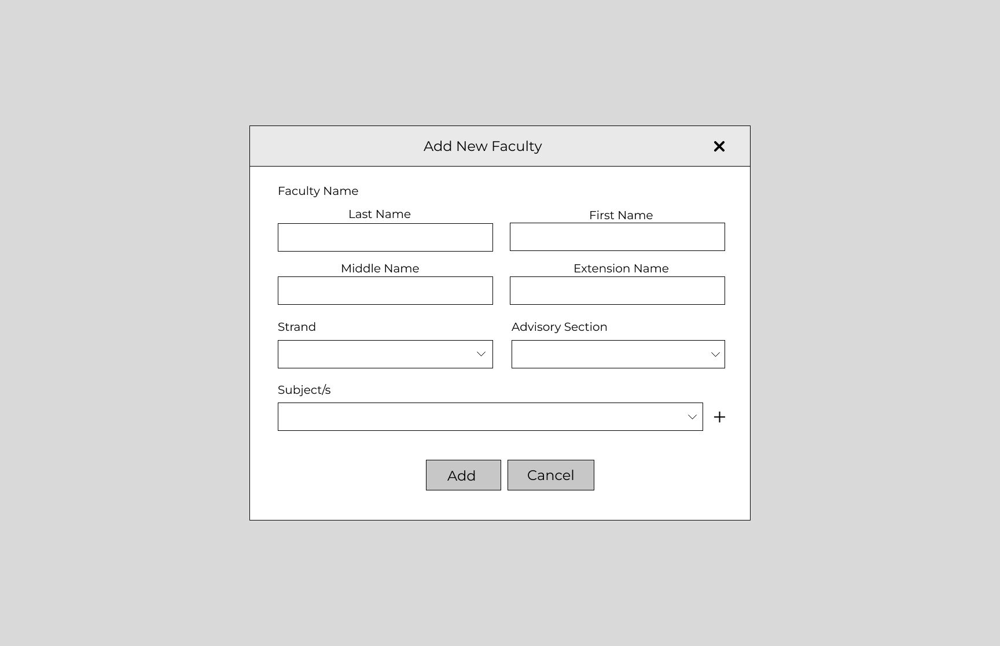

Creative Process of Automated Scheduling System
Color Palette and Typography
I based the color palette and typography on the existing school logo to keep the design consistent and recognizable. The green and yellow tones reflect the emblem’s vibrant and academic spirit, while the Montserrat font complements its clean and modern look.

The wireframe was done for the planning and finalizing stage wherein I presented this initial design and was immediately approved. It shows a web-based system that uses an algorithm to assist in the scheduling.

The screenshots provided are only some of the final prototype as per the client's consent.